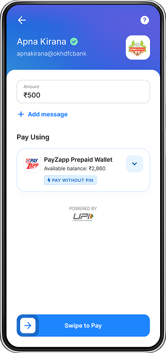

Rejected ❌
1. Make wallet the default
High adoption potential
But
Changing a user's payment method without consent is a trust violation in financial UX. In a product where users move real money, broken trust is a catastrophic cost — one that doesn't show up in week-one metrics but bleeds retention for months.
